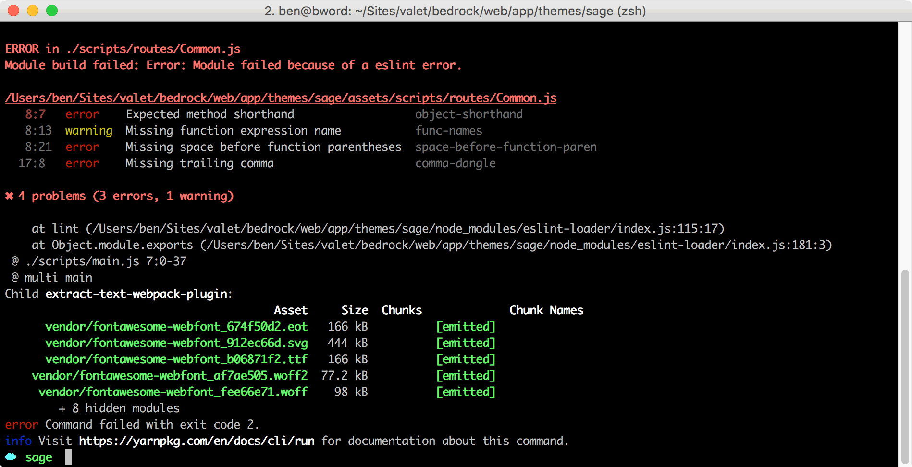

JavaScript and DOM-based routing
Sage uses ES6 for the JavaScript that's included in the theme. Since Sage strives to use the current best practices for modern front-end development, the theme allows the usage of ES6 and also enforces coding standards with ESLint.
 See the resources chapter for lots of recommended content on learning more about ES6!
See the resources chapter for lots of recommended content on learning more about ES6!
Since Sage doesn't ship with any JavaScript out of the box, except for the DOM-based router, you might not notice this until you modify the JS and attempt to build.

The ESLint configuration is located at assets/build/.eslintrc, where you might want to make changes that fit your own coding styles. We've picked Airbnb's JavaScript standard as the basis for ours.
To disable the linting in a specific file or within a file, use inline comments:
/* eslint-disable */
alert('foo');
/* eslint-enable */
The primary theme JavaScript file located at resources/assets/scripts/main.js is used to import dependencies from vendored packages (Bootstrap) as well as local dependencies. Out of the box, Sage comes with the following local dependencies:
common(resources/assets/scripts/routes/common.js) — JavaScript fired on all pageshome(resources/assets/scripts/routes/home.js) — JavaScript fired on a page with a body class that containshomeaboutUs(resources/assets/scripts/routes/about.js) — JavaScript fired on a page with a body class that containsabout-us
The local dependencies are based on DOM-based routing, which lets you conditionally execute JS on certain pages based on the page’s body classes. To add a new route, you'll need to create the file, import it, and add it to the routes variable in main.js.
When you’re working with a body class that contains a dash, such as contact-us, you’ll need to replace the dash with a camelCase format (contactUs) to use in the router.
Avoid placing JavaScript directly in assets/scripts/main.js and instead add it to the common route, or add a new route that's relevant to the JS you're adding.
Modifying the body class
Sage includes a function in app/filters.php for modifying the WordPress body class. Feel free to update the function to reflect any body class modifications you’d want to make. For example, on the Roots site we add a “product” body class if you’re viewing a single post from multiple custom post types.
/**
* Add <body> classes
*/
add_filter('body_class', function (array $classes) {
// Add product body class
if (is_singular(['book', 'screencast', 'plugin'])) {
$classes[] = 'product';
}
return $classes;
});